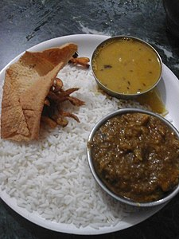

History
Ancient Period
he region has been inhabited since the Mesolithic-Chalcolithic period, as shown by several ancient cave paintings. Stone tools have been discovered from Chota Nagpur plateau region which is from Mesolithic and Neolithic period. There are ancient cave paintings in Isko, Hazaribagh district which are from Meso-chalcolithic period (9000–5000 BCE). During 2nd millennium BCE the use of Copper tools spread in Chota Nagpur Plateau and these find complex are known as the Copper Hoard Culture. In Kabra-Kala mound at the confluence of Son and North Koel rivers in Palamu district various antiquities and art objects have found which are from Neolithic to the medieval period and the pot-sherds of Redware, black and red ware, black ware, black slipped ware and NBP ware are from Chalcolithic to the late medieval period. Several iron slags, microliths, and potsherds have been discovered from Singhbhum district which are from 1400 BCE according to carbon dating age. The region was ruled by many empires and dynasties including Nanda, Maurya and Gupta during ancient period.
In Mahabharata, the region was referred as Kark Khand due to its location near Tropic of Cancer. During the age of Mahajanpadas around 500 BCE, Jharkhand state was a part of Magadha and Anga.[citation nee In the Mauryan period, this region was ruled by a number of states, which were collectively known as the Atavika (forest) states. These states were subdued and were forced to accept the hegemony of the Maurya empire during Ashoka's reign (c. 232 BCE). In ancient site of Saridkel, burnt bricks houses, red ware pottery, copper tools, coins and iron tools found which are belongs to early centuries CE. The Brahmi Inscription have been found in Khunti district which are from 3rd century BCE. Samudragupta, while marching through the present-day Chotanagpur region (North and South), directed the first attack against the kingdom of Dakshina Kosala in the Mahanadi valley.
Medieval Period
In the 7th century, Chinese traveller Xuanzang passed through the region. He described the kingdom as Karnasuvarna, with Shashanka as its ruler. To the north of Karn-Suberna was Magadha, Champa was in east, Mahendra in the west and Orissa in the south.
During medieval period, the region ruled by Nagvanshi, Pala, Khayaravala, Ramgarh Raj and Chero ruler. A Buddhist monastery has been found in Hazaribagh which was built during the Pala rule in 10th century. Bhim Karn was Nagvanshi king during medieval period. He defeated Raksel dynasty of Surguja when they Invaded the reign with cavalry.
Khakparta Temple, a 9th-century Shiva temple in Lohardaga
Modern period
The Mughal influence reached Palamu during the reign of Emperor Akbar when it was conquered by Rajput Raja Mansingh in 1574. Several invasion took place during Mughal rule. During the reign of Nagvanshi King Madhu Singh, Akbar' general invaded Khukhra. Also there was invasion during region of Durjan Shah.
King Ram Shah ruled Navratangarh from 1640 to 1663. He built Kapilnath Temple in 1643. He succeeded by his son Raghunath Shah. Thakur Ani Nath Shahdeo bulit Jagannath temple of Ranchi in 1691. The King Medini Ray, ruled from 1658 to 1674 in Palamau. His rule extended to areas in South Gaya and Hazaribagh. He attacked Navratangarh and defeated the Nagvanshi Maharaja of Chhotanagpur. The Chero rule in Palamu region lasted until 19th CE, until internal conflict between various factions weakened the Cheros and they were defeated by the East India Company. Later Palamu estate was sold by the British.

Khakparta Temple , a 9th-centruy Shiva tmeple in Loghardaga
Jagnnath Temple at Ranchi built by
king ANi Nath Shahdeo
During 18th century region under Kings of Chero dynasty , Nagvanshi danasty ,Ramgarh and Kharagdiha become parts of terrtories of East india Compnay .Ramgarh Raj along with estates of other chiefs in the regions was premanently settled as Zamindari estate. The Kharagdiha Rajas were settled as Rajas of Raj Dhanwar in 1809 , and the kharagdiha gadis were separately settled as Rajas of Raj Dhanwar in 1809 , and the kharagdiha Zamindari estates were Koderma, Gadi Palganj and Ledo Gadi. The Princely states in chota Nagpur Plateau, came with the sphere fo influence of the Maraht Empire , but they become tributary states of Birtish East India Compnay as a result of the Anglo-Maratha Wars Known as Chota Nagpur Tributary States.
The subjugation, colonization and tax imposition by the British east india Company resulted in spontaneous resistnace from the local people . The first revolt against the British East india company wast the first Chaur revolt led by Jagannath singh , zamindar of Ghastsila in 1766 and Dhal revolt led by Raja Jagannath Dhal , King of Dhaibhum in 1767. in 1769 , again Raghunath Mahato revolted against the Biritsh East India Company(ELC).
IN 1771, the revolt against the landlords and the British goverment was led by Tilka Majhi , a Paharia leader in Rajmahal hills. Soons after in 1779 the Bhumhi tribes again rose in arms against the Biritsh rule in Manbhum called chuar Rebellion . In 1807 , the Oranos in Barway murdered thier landlord from srinagar . Munda tribe rose in revolt in 1811 and 1813 .Bakhtar Say and Mundal Singh , two landowners , fought against the British East India compnay 1812.
The Hos in Singhbhum revolted in 1820 and Kol revolt in 1832 . Also in 1832 Bhumjis again revolted against the British under the leadership of Ganga Narayan singh , Known as Bhumhi Rebellion ,During 19th Century , large numbers of santals from Manbhum , Hazaribagh , Midapore were settled by British in Damin-i-koh to cultivate the land and generate revenue . But Santal were revolt against tax imposition . The santhal rebellion broke out in 1855 under the leadership of two brothers Sidhu and Kanhu . Later British renamed it as Santal Pargana .
Santhal rebellion against tax
imposition during British
company Raj in 1855
Thakur Vishwantath Shahedo and pandey Ganpat Rai rebelled against the British East India Company in the 1857 rebellion . In the Battle of Chatra , conflict took place between the rebels and the East india Compnay . Tikait Umrao singh , Sheikh Bikhari , Nadir Ali and jai Mangal Singh played pivotal role in the Indian Rebellion of 1857 . The Brothers Nilambar and Pitambar were chiefs of Bhogta clan of the Kharwar tribe , who held ancestral jagirs with many chero jagirdars led revolt agianst British East India Compnany
After the India Rebillion of 1857 , the rule of the British East india Company was transferred to the Crown in the person of Queen Victoria . Who in 1876 , was procliamed Empress of India . The Cheros and Kharwars again rebelled against the British in 1882 but the attack was repulsed . Then Brisa munda revolt, broke out in 1895 and lasted untill 1900 . The revolt though mainly concentarted in the Munda belt of khunti , Tamar Sarwada and Bandgaon .
in October 1905, the exercise of British influence over the predominantly Hindi-speaking states of chang Bhakar , jashpur , Koriya , Surguja ,and Udaipur was transferred form the bengal government to that of the Cnetral Provinces, while the two Oriya-speaking states of gangpur and Bonai were attached to the Orissa tributary States, Leaving Only Kharswan and Saraikela answerable to the Bengal governor .
in 1936, all nine states were transferrd to the eastern States Agency , the officals of which came under the direct authoirty of the Governor-General of India , rahter than under that of any provinces.
In March , 1940 INC 53rd Session was accomplished under the presidency of Maulana abul Qalam Azad at Jhanda Chowk , Ramagrh Now Ramgarh Cnatonment . Mahatma Gandhi, jawarharlal Nehru , Sardar Patel , Rajendra Prasad , sarojini Naidu , khan Abdul Ghaffar Khan , Acharya J.B.Kripalani, industiralist jamnlal Bajaj and other greats leaders of indain freedom movement attended the Ramgarh Session . Mahatma Gandhi also opened khadi and village Industires Exhibition at Ramgarh .
At that time , under the leadership fo Netajee Subhas Chnadra Bose conference against Samjhauta was also completed . In Ramgarh , Subhas Chnadra Bose was seen as president of All india forward Block and M.N. Roy was aeen as leader fo Radical democratic party.
Post Independence
jawarharlal Nehru , industiralist Jamnalal
Bajaj, Sarojini naidu , khan Abdul Ghaffar khan
, and Maulana Azad at the 1940
Ramgarh session of the indian national
congress
After Indian Independence in 1947 , the rulers of many states chose to accede t0 the Dominion of india. Changbhakar , jashpur , koriya , Surguja and Udaipur later became part of Madhya pradesh state , but Gangpur and Bonai become part of orissa state, and Kharsawan and Saraikela part of Bihar state. In 1928 , separate state was demanded by unnati samaj ,the political wing of the christian Tribal Association , which submitted a memorandum to Simon Commision to constitute a tribal state in eastern India . prominent leaders like jaipal Singh Munda and Ram Narayan singh also demanded a separate state . In 1955, the Jharkhand party , led by jaipal Singh Munda , submitted a memorandum to States Reoganization Commission for a separate jharkhand state comprising the tribal area of South bihar , but it was rejected becuase there were many languages , no link lanaguage in the reigon , tribla were in the minority , Hindustani was the majority lanaguage and adverse effect on economy of Bihar .
Later Sandan People , the native vairous caste/non-tribal groups , also joined the movement for a separte state. In 1972 , Binod Bihari Mahato , Shibhu Soren and A.K. Roy founded jharkhand Mukti Morcha . Nirmal Mahto founded All jharkhand Students Union . They led the movement for a separate state of jharkhand coordination committee (JCC), consisting of Ram Dayal Munda , B.P. Keshri , Binod Bihari Mahato, Santosh Rana and Suraj Singh Besra Started a new intiative and tried to coordinate between different parties . Keshri sent a memorandum to form Jharkhand state in 1998. jharkhand co-ordination committee was then led by Congress General Secretary Ram Ratan Ram , who urged Rajiv Gandhi to pay attention to the issue at hand .
In july 1988 , Bharatiya janta party led by Tal Bihari Vajpayee , Lal Krishna Advani and Murli Manohar Hoshi decide to demand a separate state , Vanachal , comporised of the forest region of South Bihar in Jameshedpur . Inder singh Namdhari , Samresh Singh and Rudra pratap Sarangi were the leaders of the Vanachal movment . They organised serval rallies to form a separate state .
congress General Secretary
Mr Ram Ratan Ram;s letter
to PM mr Rajiv Gandhi On
the issue of the state
jharkhand
central goverment formed a committee on the jharkhand matter in 1989 . It stressed the need of greater alloacation of the developemnt funds for the area . There was a provision for limited internal autonomy in the hill area of Assam . Other tribal areas wre covered by the fifth schedule of the constituation . Chotanagpur and Santal pargamna development boards were constituted under the chiarmanship of then chief minister of Bihar under the provision of the fifth schedule in 1972 . They failed to achieve the desired result . JMM wanted more represntation and AJSU was against it . Due to the diffenrces these parties broke away form each other . The All jharkhand Students Union introduced elements of violence in the movement and called for a boycott of election while Jharkhand Mukti Morcha Opposed this . The Jharkhand Area Autonomous Council were given repsonisbility for forty areas including agriculture , rural health , public work , public health and minearls. The council has power to recommend for legislation to the Assemnly through the state goverment and to frame bylaws and regulations.
In 1998 , when the separate state mvoement was falling apart , justice Lal pingley Nath Shahdedo was leading the movemnet . In 1998, th Union goverment decided to sent the bill concerning the formation of jharkhand state to Bihar Legislative Assembly to which Lalu prasad Yadav had said that the state would be divided over his dead body . A total 16 poliitcal parties including the Bharatiya jnata Party , Jharkhand Mukti Morcha . All Jharkhand Students Union and congress came in one platfrom the "All party Separate State Formation Committee " . to the start the movement. Shahdeo was elected as the convener of the committee. The voting on jharkhand Act was to be done on 21 Septemebr 1998 in Bihar Legislation . On that day the committee , under the leadership of Shahdeo called for Jharkand Bandh and organised a protest march . Thousands of Supporters of a separate state took to streets led by Shahdo . he was arrested and detained in a police station for hours along with many supporters.
IN 1999 Bharatiya Jnata party promised to form a separate Vanachal State if they won the state election with a majority of votes. After the last Assemebly election in the state resulted in a hung assembly , RJD's dependence on the Congress extended support on the precondition that RJD would not pose a hurdle to the passage of the Bihar reorganisation Bill . Finally , with the support from both RJD and congress , the ruling coalition at the Centre led by the Bharatiya Janta Party which had made statehood its main poll plank in the region in successive polls eariler , cleared the Bihar reorganisation Bill in the monsoon session of the parliament on 2 and 11 August in Loksabha and Rajyasabha . THis paved the way for the creation of a separate Vanachal state comporising Chota Nagpur Division and Snathal Paragana Division of South Bihar . NDA formed to the Goverment with Babulal marandi as chief Minister Later the name of the state was changed from Vanachal to Jharkhand . Babulal Marandi took the oath of chief minster on 15 November 2000 on the anniversary of the birth of tribal leader Birsa Munda .
jharkhand-statehood
The dynamics of resources and the politics of developement stil influence the socio-economic structures in jharkhand , which was carved out of the relatively underdeveloped sourthern part of Bihar. According to the 1991 census, the state has a population of over 20 million out of which 28% is tribal while 12% of the people belong to scheduled castes. Jharkhand has 24 districts , 260 blocks, and 32,620 villages out of which only 45% have access to electricity while only 8,484 are connected by roads. jharkhand is the leading producer of minearl wealth in the country after Chhattisgarh state , endowed as it is with a vast variety of minerals like iron ore, coal, copper ore, mica, bauxite ,graphite , limestone , and uranium . Jharkhand is also known of rits vast forest resources.
Naxal Insurgency
Jharkhand has been at the center of the Naxalite-Maoist insurgency. Since the uprising of the Naxalites in 1967 ,6,000 people have been killed in fighting between the Naxalites and counter-insurgency operations by the police , and its paramillitary groups such as the salwa judum .
Despite having a presence in almost 7.80 % of india's geographical area . (home to 5.50% of india's population ), the state of jharkhand is part of the "Red Corridor " comporising 92,000 square kilometers, where the highest concentration of the groups estiamated 20,000 combatants fight. Part of this is due to the fact that the state harbous an abundance of natural resources , while its people live in abject poverty and dstitution . The imporvished state provides ample recruits for communist insurgenst , who argue that they are fighting on behalf of the landless poor and tribals that see few benefits from the resource extractions. As the federal goverment holds a monopoly on sub-surface resources in the state , the tribal popualtion is prevented form staking any claim on the resources extracted from their land . In response , the insurgents have recently begun a campaign of targeting infrastructure related to the extraction of resources vital for indian energy needs , such as coal .
On 5 March 2007 , Sunil Mahato , a member of the national parliament , was shot dead by Naxalite rebels near Kishanpur while watching a football match on the Hindu festival of Holi . His widow , Suman Mahato , the Jharkhand Mukti Morcha candidate , won the jamshedpur Lok Sabha by -election in Septemebr 2007 and served in parliament until 2009 .
Geography
Jharkhand is located in the eastern part of india and is enclosed by West Bengal to the eastern side. Chhattisgarh adn Uttar Pradesh to the western side, Bihar to the northen part and Odisha to the southern part.
jharkhand envelops a geopgraphical area of 7,970,000 hectare . Much of jharkhand lies on the Chota Nagpur plateau . Many rivers pass through the Chota Nagpur plateu . they are : Damodar , North Koel , Barakar , South Koel , Sankh and Subarnarekha rivers . THe higher watersheds of these rivers stretch out within the jharkhand state. Much of the jharkhand state is still enclosed by forest . Forests sustain the population fo elephants and tigers.
Climate
physical map of jharkhand
Climate fo jharkhand varies form Humid subtropical in the north to tropical wet and dry in the south-east . the main seasons are summer , rainy , autumn , winter and spring. The summer lasts from mid-April to mid-june . May , the hottest month , characterised by daily high temperatures around 37 °C (99 °F) and low temperatures around 25 °C (77 °F). The southwest monsoon, from mid-June to October, brings nearly all the state's annual rainfall, which ranges from about 1,000 mm (40 in) in the west-central part of the state to more than 1,500 mm (60 in) in the southwest. Nearly half of the annual precipitation falls in July and August. The winter season lasts from November to February. The temperatures in Ranchi in December usually vary from 10–24 °C (50–75 °F). Spring season lasts from mid-February to mid-April.
Hills and Mountains
Ranges
• Parasnath : Parasnath Hill is also recognised as Sri Sammed Sikharhi . The Prasnth Hil lis situated in Giridih district of jharkhand .it is a chief jain pilgrimage site and the holy place for Jains. It is believed in the Jain cultured that 20 of the 24th Trihtankars attained Moksha from this place . The height of the hill is 1, 364 meters.
• Netarhat : Netarhat is a town in Latehar district .Referred to as the "Queen fo Chotanagpur", it is a hill station . Netarhat Residential School is lcoated here. Netarhat Dam is also loacated in this area .
• Rajmahal Hills : These hills are located in Sahibganj and Godda districts of Eastern part of jharkhand . The Rajmahal hills belong to the jurassic era . These hills like other also have many waterfalls , lakes adn greenery .
• Trikut : Trikut Hill is located ten kilometers away form Deoghar and lies on teh way fo Dumka in jharkhand . Trikut hill is also called Trikutcuhal becuase these are 3 major peaks on the hill . The height of Trikut hill is 2470 feet.
• Tagore Hill: Tagore Hill is also recognised as the Morabadi Hill . The Tagore hill is loacted in Morabadi , Ranchi .The Brother of Rabindranth Tagore, Jyotrindranth Tagore had made a tour at Ranchi in the Year 1908.
Main Rivers
• Ganga River : The holy river Ganga passes through the north-eastern district fo Sahebganj . Cities on the Banks fo Ganga river in Jharkhand : Sahebganj , Pakur
• Son River : Origin of Son River : Amarkantak , Cities on the Shore of Son River : Sidhi .
• Subarnarekha River : Origin of Subarnarkeha River :(Nagdi Ranchi) Chota Nagpur Plateau , Cities on the Shore of Subarnarekaha River : Ranchi , Chandil , Jamshedpur, Ghastshila , Gopiballavpur .
• Kharkai River : Origin of Kharkai River : Mayurbhanj District , Odisha ; Cities on the Shore of Kharkai River : Rairangpur , Adityapur and enters the Subarnarekha river in north-western Jamshedpur .
• Damoder River : Origin of Damoodar River : Chota Nagpur Platau (Tori latehar), Ciites on the Shore fo Damodar River : Latehar lohardaga, Ramgarh , Girdih , Dhandbad , Bokaro , Asansol , Ranjganj , Durgapur , Bardhaman.
• North Koel River : Origin of North Koel River : chota Nagpur Plateau , Cities on Shore of North Koel River : Daltonganj .
• South Koel River: Origin of South Koel River : Chota Nagpur Plateau ,(Nagadi Ranchi ), Cities on the shore of South Koyal river : Manoharpur , Rourkela .
• Lilajan River : ALso known as Falgu river . orign of Lilajan River : Northern chota Nagpur plateau , City on the shore : Gaya
•Ajay River : Origin of Ajay River : Munger , Cities on the Shore of Ajay River : Purulia m chittaranjan , llambazar, jaydev kenduli.
Mayurakshi River: Origin of Mayurakshi River : Trikut hill , City on the Shore of Mayurakshi River : Suri.
Barkar River : Origin : Padma in Hazaribagh , Barakar Nadi Flows thorugh the districts fo Koderma , Griridih , Hazaribagh ,etc.
Flora and Fauna
Jharkand has a rich variety of flora and fauna . the national parks and the zoologincal gardens in the state of jharkhand present a panorama of this variety .
Part of the reason for the variety and diverstiy of flora and fauna found in jharkhand state may be accredited to fauna , as indicated within brackets : mammals (39) , snakes (8), lizard(4), fish(6), insects(21), brirds(170), seed bearing plants and trees(97), shrubs and herbs (46), climbers , parasites and semi-parasites(25), and grasees and bamboos(17).
Palash flowers , bright red , pepper the
skyline in jharkhand during fall ,
also as forest fire

A crocodile at Muta crocodile
breeding centre at Ormanjhi , Ranchi
A feamle Indian Elelphant at Dlama Wlidlife Sancturay in Jharkhan.
Demogrpahics
Historicl population
| year |
pop |
±% |
| 1901 |
6,068,233 |
------ |
| 1911 |
6,747,122 |
+11.2% |
| 1921 |
6,767,770 |
+0.3% |
| 1931 |
7,908,737 |
+16.9% |
| 1941 |
8,868,069 |
+12.1% |
| 1951 |
9,697,000 |
+9.3% |
| 1961 |
11,606,000 |
+19.7% |
| 1971 |
14,227,000 |
+22.6% |
| 1981 |
17,612,000 |
+23.8% |
| 1991 |
21,844,000 |
+24.0% |
| 2001 |
26,945,829 |
+23.4% |
| 2011 |
32,988,134 |
+22.4% |
According to the 2011 Indian Census ,jharkhand has a population of 32.96 million , consiisting of 16.93 million males and 16.03 million females . The sex ratio is 947 females to 1,000 males . THe literacy rate of the state was 67.63% with Ranchi district being Most educated at 77.13% compared to ruarl pakur district being least at 50.17%.
Langauge
Hindi is the offical langauge in jharkhand and is spoken by the people of the state , although different regions have thier own languages . These include Nagpuri, Khortha , Kurmali , Magahi and Bhojpuri . Jharkhand has accorded additional official language status to Angika ,Bengali , Bhojpuri, Bhumji, Ho, Kharia , Kurukh , Khorhta , Kurmali , MahgahiMaithill , Mundari , Nagpuri , Odia , Santai and Urdu .
Languages of Jharkhand
(2011 Census) |
| Khorta(23.46%) |
| Hindi(21.4%) |
| Santali(9.91%) |
| Bengali(9.74%) |
| Nagpuri(7.23%) |
| Urdu(5.96%) |
| Magahi(4.14%) |
| Ho(3.01%) |
| Mundari(2.93%) |
| Kurukh(2.89%) |
| Bhojpuri(2.92%) |
| Odia(1.61%) |
| Others(5.5%) |
| Religion In jhrakhand(2011) |
| Hinduism(67.83%) |
| Islam(14.53%) |
| Sarna(12.52%) |
| Chirstianity(4.3%) |
| Sikhism(0.22%) |
| other(0.4%) |
| Not stated(0.21%) |
sun temple at ranchi
Hinduism is the
largest religion
in the state
Religion
As per the 2011 census Hinduism is the majority religion in the state at 67.8% follwed by Islam at 14.5% and christianity at 4.3% . otehr religions , primarily Sarnaism , constitute 12.8% of the population.
Hindus from majority in 19 out of 24 districts of the jharkhand . christiantiy forms majority in simdega district(51.04%). Sarna forms majority in Lohardaga (51.01%), West Singhbhum (66.29%)and pluarlity in Gumia (44.62%) and Khunti (45.53%). Muslims have highest presence in Pakur district and Shaebganj district of jharkhand forming 35% and 34% of the population.
Goverment and
administration
the Constitutional head of the goverment of jharkhand is the governor , who is apponited by the president of india . The real executive power rests with the chief minister and the cabimet .The political party or the coalition of political parties having a majority in the legislative Assembly forms the goverment .
The head fo the bureaucracy of the state is the chief secertary . under this position , is a hierachy of officals drawn from the Indian Administrative Service , India Polic Service , Indian Jharkhand has a High Court which has been functioning since 2000. All the branches of the goverment are located in the state capital , Ranchi .
Administrative Districts
The state was formed with 18 didstricts that were formely part of south Bihar . Some of these districts were reorganised to form 6 new districts , nameley , Latehar , Saraikela , Kharswan, Jamtara ,Plaur , Khunti and Ramgarh . At present , the state has 5 Divisions and 24 Districts. One interesting thing about jharkhand is that all its districts , excepts Lohardaga and khunti , share a border with a neighbouring state .
| palamu Division |
North Chotanagpur Division |
South Chotanagpur Division |
Kolhan Division |
Santhal Pargane Division |
| • Garhwa |
• Chatra |
• Ranchi |
• West Singhbhum |
• Deoghar |
| • palamu |
• hazaribag |
• Lohardaga |
• Seraikela kharsawan |
• jamtara |
| • Latehar |
• Girdih |
• Gumla |
• East Singhbhum |
• Dumka |
| ------ |
• Koderma |
• Simdega |
------ |
• Godda |
| ------ |
• Dhanbad |
• khunti |
------ |
• pakur |
| ------ |
• Bokaro |
------ |
------ |
• Sahebganj |
| ------------ |
• Ramgarh |
------------ |
--------- |
-------- |
Largest Cities in jharkhand
(2011 Census of India estiamte)
| Rank |
City |
District |
Population Rank |
| 01 |
Jamshedpur |
East Singhbhum |
1,339,438 |
| 02 |
Dhanbad |
Dhanbad |
1,196,214 |
| 03 |
Ranchi |
Ranchi |
1,126,741 |
| 04 |
Bokaro |
Bokaro |
564,319 |
| 05 |
Deoghar |
Deoghar |
203,123 |
| 06 |
Phusro |
Bokaro |
186,139 |
| 07 |
Hazaribagh |
Hazaribagh |
153, 595 |
| 08 |
Girdih |
Girdih |
143,630 |
| 09 |
Ramgarh |
Ramgarh |
132,441 |
| 10 |
Medininagar |
Palamu |
120,325 |
Economy
open-cast coal Mining
in Dhanbad
The gross domestic product of jharkhand is estimatged at ₹3.83 lakh crore (USD $48 billon) in 2020-21. The per capita CDP of jharkhand in 2018-19 was ₹82, 430(US $ 1,000).
Jharkhand has severla towns and innumerable village with civic amenitite . Urbanization ration is 24.1 % .Jharkhand also has immense mineral resources : minearls ranging form(ranking in the country wihtin brackets) form iron ore (4th), coal (3rd), copper ore (1st), mica (1st),bauxite(3rd), manganesse , limestone , china clay , fire clay , graphite(8th), Kainite(1st), chormite(2nd), asbestos(1st), thorium (3rd), Sillimanite, uranium(jadugunda mines, Narwa pahar) (1st) and even gold(Rakha Mines)(6th) and sliver and several other minerals . Large deposits of coal and iron ore support concentration of industry ,in centers like jameshedpur , Dhanbad ,BOkaro and Ranchi . Tata Steel , A NSE NIFTY 5000 conglomerate has its corporate office and main plant in Tatanagar , jharkhand . It reporete a gross income of ₹ 204, 910 million for 2005 . NTPC will start coal production form its captive mine ins tate in 2011-12 , for whichi the company will bew investing about RS 18 billion .
Agriculture is another sector in the economy of jharkhand which helps the economy to grow.IN jharkhand farmers produce several crops sucah as rice , wheat maize , pulses , potatoes ,and vegetables such as tomato, carrots , cabbage , brinjal , pumpkin , and papaya . The ohter industries are cottae industry and IIT industry.
Cuisine

a jharkand rice plate
Staple foods of jharkhand are rice , dal , vegetable and tubres . Spices are sparingly used in cuisine . Famous dishes include Chhilka Roti ,Malpua , Pitha , Dhuksa ,Arsa ,roti ,Dudharuri , and Panipuri (gupchup).Rugra and putoo is a type of edible mushroom that is grouwn extensively in jharkhand and harvested during the rainy months . it has a hardened , white , edible shell and a softe rdark colored centre.
Bamboo shoots are also used as vegetable . the leaf of Munga(moringa oleifera) and koinar tree (bauhinla Variegta) used as leafy vegetable or Saag.
local alcoholic drinks include rice beer, originally known as Handi or Handia , named after the vessel handi (arthen pot) used to make it . Handiya is culturlaly associated with native i.e. Sadans and Tribal , this drink consumed by both men and women on social occasions like marriage and other festivals . Another common liqour is called Mahua daru , made from flowers of the "Mahua tree" (madhuca Longfolia ).
Folk music and dance
chhau Dancers in jharkhand village
There are several Flok dance in Jharkhand such as : jhumair , Mardani , Jhumar , Janani Jhumar , Domkach , vinsariya , Jhumta , Fagua , Angai , Paiki , chhau , Firkal , Mundari and Satnali dance .
Festivals
Major local Festivals of jharkhand are Saraswati puja , Sarhul , Tusu Festival , Rath Yatra , Makar Sankranti , Durga Puja , Karam , Nawakhani , Jitia , Mansa Puja , Diwali , Soharai , Phagua , Dusshera , Ram Navami , Mage porob , and Sendra festival
Karam festival in jharkhand
Painting
Sohari wali painting
jharkhand
THE Sohari and Khovar painting is a mural art form particed by women. Sohrai painting is traditionally done at the sohrai harvest festival , while khovar painting is done at weddings.
Tattoo
The tattoo making tradition of Godna is an essential part of local tradition.
Cinema
Jharkhand produce many films in regional and tribal languages including Nagpuri , Khortha , Santali , Ho and Kurukh . Film industry in state of jharkhand is known as jhollywood.
Air
Birsa Munda AIrport is the largest domestic airport in the state with air connectivity to major indian cities of Delihi , Kolkata , Bamgalore , Mumbai , Hydrabad among others.
DEoghar Airport is the international airport located in Deoghar in the state of jharkhand, India . The airport is constructed to handle Airbus A320 , Airbus A321 , and Boeing 737 type fo aircraft . prime Minister Narendra Modi laid the foundation stone of developement of the airport in jharkhand on 25 may 2018. it is the second oeperationl airport in state of jharkhand after Ranchi.
Other airports present in the state are Bokaro Airport , Jamshedpur Airport , Chakulia Airport , Dumka Airport and Dhandbad Airport which mostly run private and charter flights.
Roads
Jharkhand has extensive network fo National Highways and State Highways . HTere is 2,661,83 km(1,653 mi 1,733 yd) of paved National Highways in the state of 2016 . The National Highways present in the state are numbered 18, 19, 20, 22, 33, 39, 43, 114A, 118, 133, 133A, 133B, 139, 143, 143A, 143AG, 143D, 143H, 218, 220, 320D, 320G, 333, 333A, 343, 419 and 522.[109] The Golden Quadrilateral network of Delhi – Kolkata route runs through Jharkhand notably at Dhanbad.
Ports
jharkhand is landlocked state but has numerous rivers and waterways . A multi-modal port has been planned at Sahebganj where river Gangas flows. THe project is estimated to cost ₹ 65,000 million and phase-1 is estimated to be completed by 2019 .
Rail
Jharkhand is very well connected by railways . The state has numerous railway stations and railway junctions . Hilly regions of stat are equipped with tunnels that form essential organ of railways.

National highway 33 near
Ramgarh Contonment

view form the Sahibganj
Railway Station
Education
As per the 2011 census conducted by Goverment of Inida the official literacy rate for the state was 67.63% (male :78.45% ; female : 56.21%)with nine districts above the average literacy rate.
• Ranchi: 77.13% (male 85.53% ; female : 68.20%)
• East Singhbhum: 76.13% (male 84.51% ; female : 67.33%)
• Dhanbad: 75.71% (male 84.51% ; female : 67.33%)
• Ramgarh: 73.92% (male: 83.51%; female: 63.49%)
• Bokaro: 78.48% (male: 84.50%; female: 61.46%)
• Hazaribagh: 70.48% (male: 81.15%; female: 59.25%)
• Saraikela Khasawan: 68.85% (male: 81.01%; female: 56.19%)
• Koderma: 68.35% (male: 81.25%; female: 54.77%)
• Lohardaga: 68.29% (male: 78.62%; female: 57.86%)
• Deoghar: 66.34% (male: 79.13%; female: 53.39%)
Since the formation of the new state the jharkhad Education project Council (JEPC)has been implementing four projects to spred elementary edcuation : DPEP , SSA , NPEGEL , and KGBV . The stat ahs been moving towards the goal of universal elementary education but the target of 100% enrolment and retentio nfo children in schools has not yet been attained . jharkhand has made primary education so accessible that 95% of children of ages 6-11 are enrolled in school, as opposed to 56% in 1933 - 94 ; this will likely imporve literacy a great deal .
Schools
The medium of instruction in schools is Hindi/English with English/Hindi/Sanskrit/Bengali/Odia as
second language . After 10 years of schooling , students can join two years of intermediate course(or +2 courses)in Arts , Science and Commerce . This is followed by three years of degree courses(graduation)or four years of Engineering /Agriculture /Medicine degree .
The school system comprises various private and public schools . The goverment schools are abundant .Few notable schools are St. Thomas School , Ranchi , Sainik School Tilaiya , Loyola School , Jmaeshedpur , Delhi public School , Bokaro , Delihi Public School , Ranchi , BIshop Westcott Boys'School , Ramakrishan Mission Vidyapith Deoghar , De Nobill School and St.Xaviers' School Hazaribagh .
In 2009 Franz Gastler establihsed yuwa School a NGO in Hutup village in Ranchi district with helps of friends to use football as a platfrom to combat child marriage . illiteracy and human trafficking in rural india . In 2019 , it won the Lauresu Sport for Good Award.
Universities and colleges
Birla Institute of Technology
, mersa ,Ranchi
jharkhand is one fo the fastest growing states in india for increasing literacy rate . it has a large number of universities and colleges . The central Universtiy of Jharkhand and University of Ranchi are the university of the state to which many colleges are affiliated .Some of the leading general universities includes teh AISECT Unvierstiy , Arka jain University , Bino Bihari Mahto Koyalanchal Univeristy , Birsa Agricultural University , Central Universtiy of Jharkhand , jharkhand Rai University , Jharkhand Raksha Shakti Univeristy , Kolhand University National University of Study and Resarch in Law, Nilamber-Pitamber University , Sarala Birla University , Sido Kanhu Murmu University , Tata college and Vinoba Bhave Universtiy .
Some of the autonomous colleges incldues Dr Shyama Prasad Mukherjee Universtiy (formely Ranchi college), Indian Institute of information Technology Ranchi , Indian insitiute of Management Ranchi , Indian Insitiute of Technology (indian School of Mines )Dhanbad , National Institute of Foundry and Forge Technology Ranchi , National Universtiy of Study and Resarch in Law , National institute of Technology Jamshedpur St.Xavier's college Ranchi , Xavier Institute of Social Service Ranchi and Xavier Labour Relations institute Jamshedpur .
Major engineering colleges includes Birla Institute of Technology Mersa , Birsa Institute of Technology Sindri , DAV institute of Engineering and Technology Medininagar , Indian Institute of Technology (Indian School of Mines ) Dhanbad , National institute Foundry and Forge Technology ranchi ,Bokaro Institute of Technology and National institute of technology jameshedpur . Medical Schools of jharkhand includes the All india institute of Medical Sciences Deoghar (AIMS) , Mahatma Gandhi Memorial Medical College Jamshedpur(MGM) , Mediniral mecical College and Hospital Palamu , Phulo Jhano Murmu medical College Dumka , Rajendra Institute of Medical Sciences Ranchi (RIMS), shaheed Nirmal Mahto Medical College Dhanbad and Shaheed Sheikh Bhikhari Medical College Hazaribagh . Ranchi is a leading healthcare center and thus it is home to some of the top medical colleges of india . It is also hoem to the Central Institute of Psychiarty . Jameshedpur have some of the leading polytechninc colleges of india . Those includes the Nettur Technical Training foundation , Tata steel Technical institute , R.D. Tata Technical Education center and Indo Danish Tool Room (IDTR).
Public Health
Becuase of its mild climate , Jharkhand , particularly its Captial Ranchi has been a health resort . As far abck as 1918 , Facilities were set up for treatment of mentally challegned .
European mental Hospital was established along with indian Mental Hospital . Today they are called Central institute of Psychiatry and Ranchi institute of Neuro-psychiatry and Allied Sciences respecitviely . In certain areas of jharkhand, poverty and consequent malnutrition have given rise to disease like tuberculosis (TB). In fact , TB has assumend epidemic proportions in certain areas of the state . For management and treatment of such TB , ltki TB Sanatorium , Ranchi , established in 1928 has been doing work as a premier institute for clincal and progrmamatic management of TB . THe ltki TB sanatorium is well equipped and accredited by the indian goverment for quality assurance and culture and Drug Sensitvity Testig For M.TB . it provides free to cost treatment for TB as well as drug-resistant TB. Likewise in ht efield of treatement of cancer , Tata Main hospital , jamshedpur , is rendering pioneering work . In the same way , Bokaro General Hospital equipped with modern facilities for the treatmenet of cnacer and heart0related problems iwth the capacity fo 1100 beds one fo the largest in eastern india.
Although several public and private health facilities are avalilable in the state , overall infrastrcutrue for dispendsing health related services require inporvements . An exception is the Tata Motors Hospitial which is an example of an ISO 14001 and 18001 certified hospital and DNB teaching facilities .
Ranchi , the capital , has witnessed a sharp growth in the number of hospitals.
Fluoride in groundwater presents a public health problem in jharkahdn . A recent survey led by the Birla institute of Technology , Mers a, Ranchi in collaboration with UNICEF in the northwest districts of Palamau and Garhwa found fluroide levels above the drinking WHO drinking water guidelines . Excessive amounts of fluoride in drinking water cna lead to dental fluorsis , prevalent bone fractrues , and and skeletal fluorosis , and irreversible disabling condition . Soem work ha sfocused on combting fluorosis throuhg increased calcium intake by consuming local plants. Resarchers at princeton University and the Birla institute of Tchnology , Mersa , Ranchi are currenlty investigationg defluoridation options , while performing and epidemiological survey to assess the extent of fluoride linked helath problems and the impact of future interventions.
Almost 80% fo jharkhand's people are farmeres , although it contains 40% of india's mineral reserves it has soem of india's poorest people , in Summer 2009 the stae was threatened by drought , with poeple critising the goverment for not providing food aid or assistance.
Sports
JRD TATA Sports Complex , Jamshedpur hosts football matches fo India super League and is the hoemof ISL based footbll club Jamshedpur FC. cricket , hckey , and football are common games in jharkhand . Players like Jaipal singh , a former india hockey captian and Olympian and manohar Topno currenlty play for the Indian Hockey team . Jaipal Singh was the captain of the hockey team theat won the first gold emdal for india in the 1928 summer Olympics in Amsterdam . maherndra Singh Dhoni who was the captian of Indian cricket tema and led the indian captain Kapil dev In 1983 at Lord's ENgland is form here .
Other notable cricketers from Jharkhand are Varun Aaron , Shahbax Nadeem , adn Saurabh Tiwary . Hea was one fo the key batsemne in teh indian tema that won the 2009 U/19 cricket World Cup in Malaysia . Other Sportspeople include Deepika Kuamri , a young archer who won gold medal in the 2010 commonwealth games in the women's individual recurve eent . Nikki Pradhan currenlty a member of the national hockey tema . Pradhan was the first female hockey player form jharkhand to represent India in the Olympics .
An international cricket stdium with an indoor stadium and a practice ground has been constructed . This International stadium has hosted an international match between india and England on 19 january 2013 . APart fomr theat this stadium has hosted two IPL 6 matches for KKR and qualifier 2 of IPL 8 between CSK and RCB and CElebrity Cricket League Matches for Bhojpuri Dananggs . A tennis academy , which was inaugaurated by Sania Mirza and Shoaib Malik , also runs besides the cricket stadium . Ranchi is among siz cities in Hockey india League to be played in january 2013. Ranchi franchise was bought by patel-Uniexcel Group and the team named Ranchi Rhinos which is now being co-hosted by Mahendra Singh Dhoni and Named as Ranchi Rays.
Arieal view of Keenan
stadium in
jameshedpur
Tourism
jharkhand is known for its waterfalls , hills and holy places. Parashnath , Baidyanath Dham , Maa Dewri Temple and Chinnamasta Temple are major religious places.
Tattapani Hot Water Spring is loacted 8 Km from Latehar . The hot spring water come out from different places on the sukari River bed. Reach in sulphur , the hot spring is believed to have medicinal properties and good for skin
Itkhori is a holy place for Hindus , Buddhists and Jains . It is believed to be the place from where Gautama Buddha started his journey for Bodh Gaya . Many Sculptures of Hindu , jain and Buddhist art styles wre found in 2018 . Rankinin Temple fo Jadugora is famous in jharkhand as well as in Odisha ,West bengal and Bihar. There are several waterfalls in the states including jonha Falls , Hundru Falls , Dassam Falls , Perwaghagh Falls and Panchghagh Falls. Netarhat is a hill station in teh state.
There are several wildlife sancturaries in jharkhand including Betla Nationa park and Dalma Wildlife Sanctuary which are major attarction for tourists .
There is a Tribal Research Institute and Museum in Ranchi aimed at studygin the psychological factors that contribute to the changes of the nature of adolescent rural tribal students in urban enviroment .
The anicent Baidyanath Jyotrindranth temple in Deoghar
Jain Temple at Samet Shikharji , the place
from where twenty Tirthanksars attained nirvana
_Dhanbad.jpg)